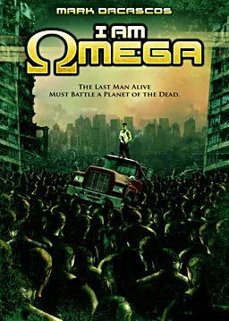

The genetics
Genetics is mentioned only as the cause of the apocalypse. The people of Los Angeles have degenerated into a feral, cannibalistic subspecies because of a 'genetic infection', a virus whose origin the film does not explain, and a survivor is said to carry a cure in her blood. The film, an Asylum mockbuster released to cash in on I Am Legend, uses this premise only to set up a survival thriller; no scientists appear, and the cure remains a hope for the future. The idea that an infection could turn humans into a different subspecies is pure fiction.
The story
In a post-apocalyptic Los Angeles overrun by cannibalistic, zombie-like humans, Renchard struggles to survive alone and has planted time bombs around the city to destroy it. Brianna, a survivor stranded on her way to Antioch, a community of survivors, contacts him by webcam and asks for help, but he refuses. Two men, Vincent and Mike, arrive claiming to come from Antioch and insist that Brianna carries the cure in her blood; at gunpoint, Renchard leads them into the city, with 24 hours before the bombs go off. Mike is killed in the sewers. After they rescue Brianna, Vincent shoots Renchard and takes her, saying he 'liked the world the way it was'. Renchard recovers, kills Vincent as he tries to rape and kill Brianna, and the bombs destroy the city. Renchard and Brianna set out for Antioch to make a cure, but a single zombie has survived.